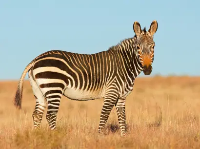
Mammals
From majestic antelope species to smaller, elusive creatures.

A luxury wilderness escape in the heart of the Baviaanskloof.
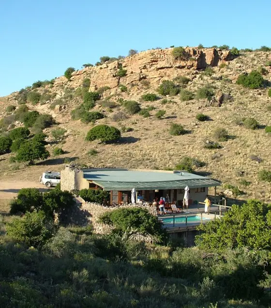
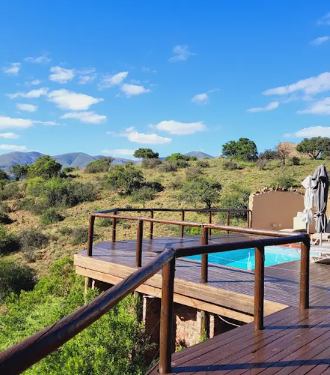
Nestled in the heart of the breathtaking Baviaanskloof Wilderness, Sederkloof Lodge offers an unparalleled escape into nature’s beauty.
Designed to blend seamlessly with its surroundings, the lodge provides luxurious comfort while preserving the pristine tranquility of the landscape. Whether you seek relaxation or adventure, Sederkloof Lodge promises an unforgettable experience in the heart of South Africa’s untouched wilderness.
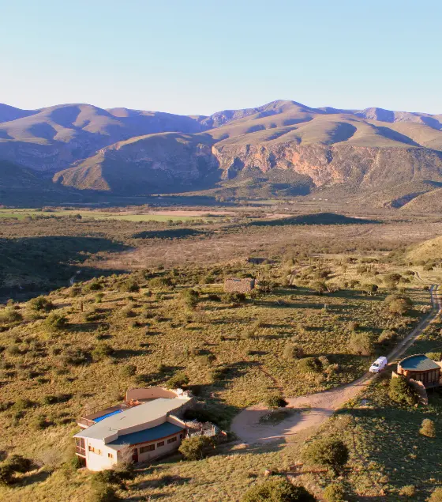
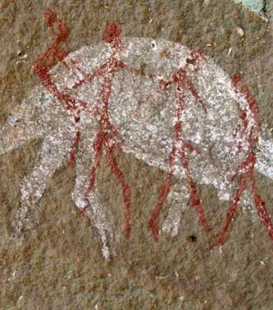
Sederkloof Lodge is situated within the vast and awe-inspiring Baviaanskloof Nature Reserve, a UNESCO World Heritage Site known for its rich biodiversity, dramatic mountain ranges, and unspoiled natural beauty.
This secluded sanctuary is home to a diverse range of wildlife, indigenous flora, and ancient rock formations, offering visitors a rare opportunity to reconnect with nature in a truly spectacular setting.
Stay in style & serenity.
Our exclusive lodge features private stone-and-glass chalets, each thoughtfully designed to maximize panoramic views of the rugged landscape. Each self-catering unit is elegantly furnished, offering comfortable beds, en-suite bathrooms, and private decks where guests can unwind while immersing themselves in the natural surroundings.
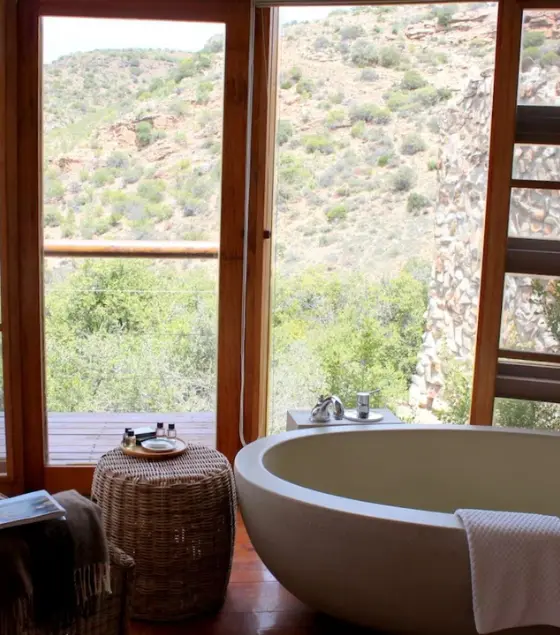
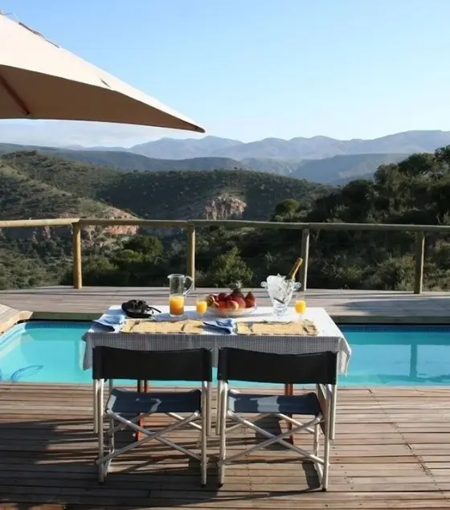
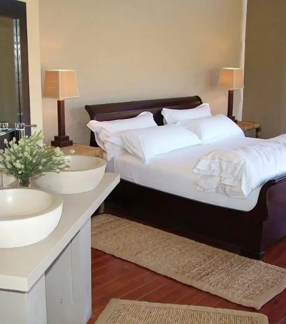
We run seasonal specials throughout the year. See today’s rates and availability on our booking page, or give us a call and we’ll help you find the best deal for your dates.
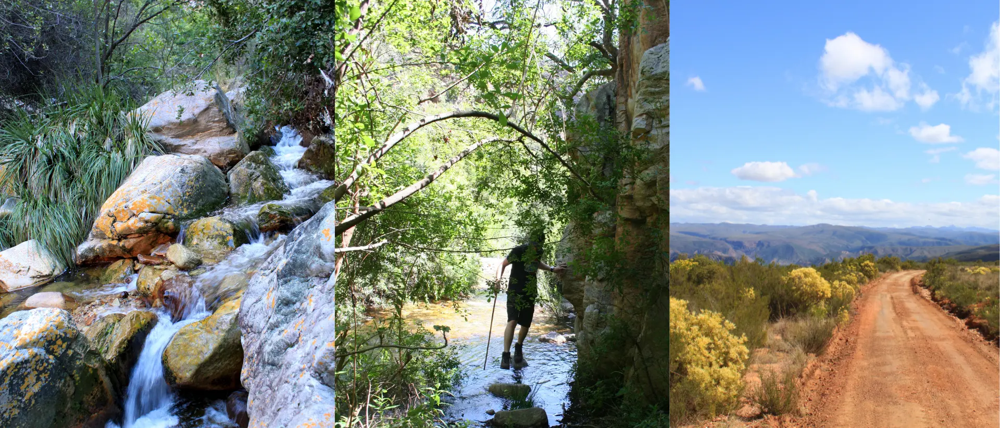
Explore, discover, and reconnect with nature.
For those seeking adventure, Sederkloof Lodge offers a range of activities that showcase the beauty of Baviaanskloof. Explore scenic hiking trails that lead to hidden waterfalls and ancient rock art, embark on thrilling 4x4 excursions through rugged mountain passes, or enjoy guided birdwatching tours that reveal the incredible diversity of the region’s avian life. Whether you prefer an active exploration or peaceful relaxation, there’s something for every nature lover.
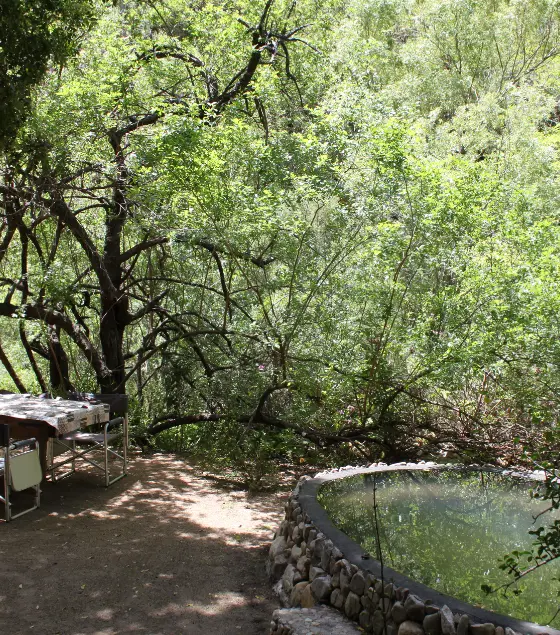
Committed to environmental preservation, Sederkloof Lodge operates with sustainability at its core.
Our eco-friendly practices ensure that we protect the delicate ecosystem while providing guests with a luxurious yet responsible travel experience. From solar-powered energy solutions to responsible water management, every aspect of our lodge is designed to minimize our ecological footprint.

Wildlife checklists, the region’s plant biomes, and the medicinal plants that grow around the lodge.

From majestic antelope species to smaller, elusive creatures.
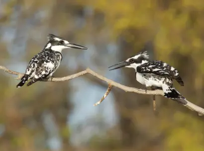
Over 310 recorded bird species, from sunbirds to black eagles.
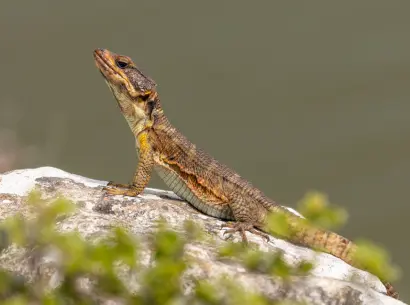
56 reptile species, including the striking blue-spotted girdled lizard.
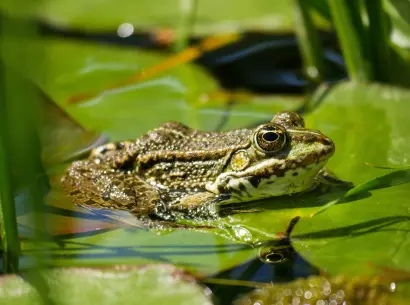
17 recorded species of frogs, toads and ghost frogs.
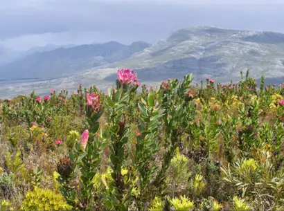
Proteas, ericas and restios on the higher slopes, part of the Cape Floristic Region.
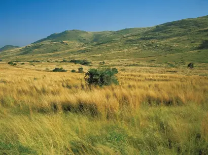
Golden grasses, scattered Acacia trees and seasonal wildflowers on the valley floor.
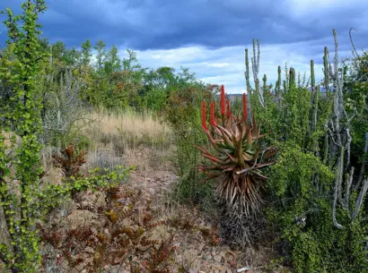
Dense clusters of vegetation and Spekboom on north- and east-facing slopes.
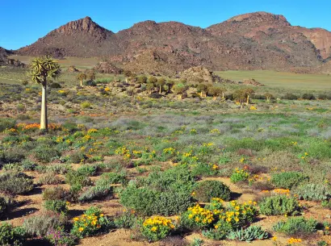
Aloes, crassulas, mesembs and euphorbias adapted to long dry periods.
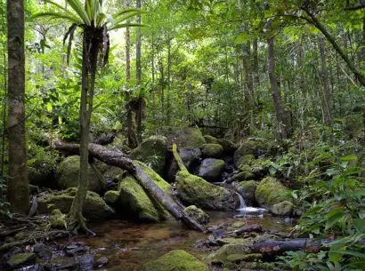
Wild figs, stinkwoods and cycads deep within cool, misty gorges.
Aalwyn
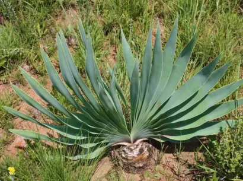
Gifbol, bushman poison bulb
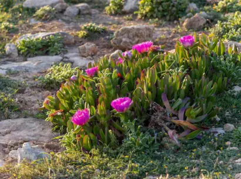
Suurvygie, sour fig
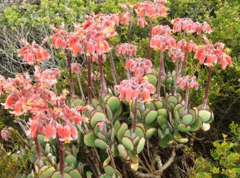
Plakkie, pig’s ear
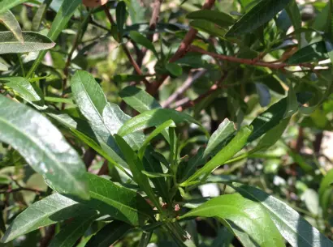
Sandolien, sand olive
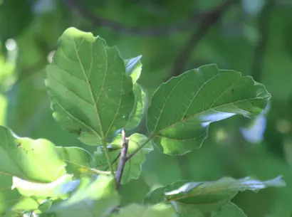
Wildevy, wild fig
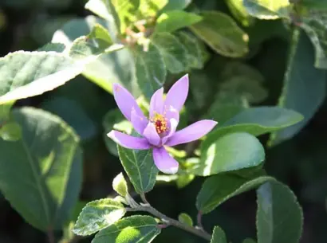
Kruisbessie
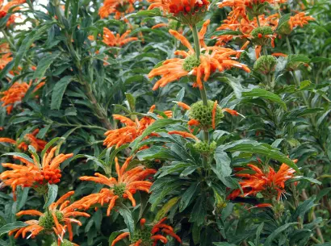
Wilde dagga
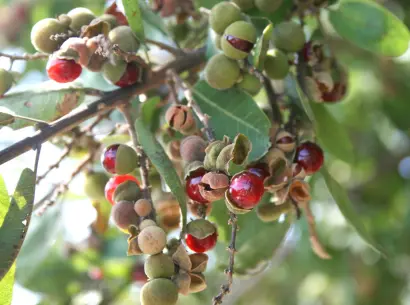
Doppruim, jacket plum
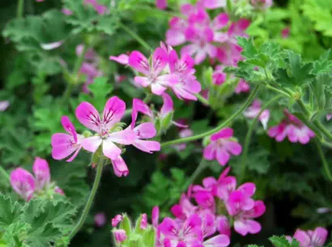
Malva
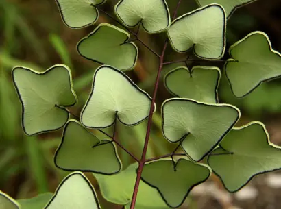
Hard fern
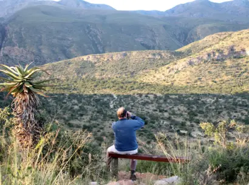
Medical terms and 20 more plants found at the lodge
What to pack, how to get here, and what to expect once you arrive.
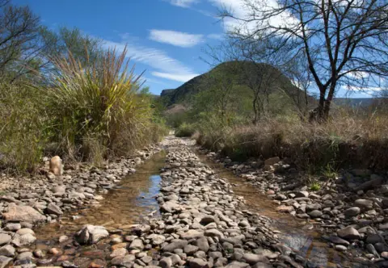
Planning a stay at Sederkloof Lodge? You’re in for wide skies, mountain pools, and the sweet sound of nothing. Stick to lightweight layers, as mornings can be crisp and afternoons warm. Bring good hiking shoes or takkies for kloof walks, and don’t forget swimwear for refreshing dips in the rock pools.

Whether you’re coming from Port Elizabeth (around 3.5 hours) or George (about 3 hours), the drive offers winding gravel roads, changing scenery, and the kind of views that make you pull over just to take it in.
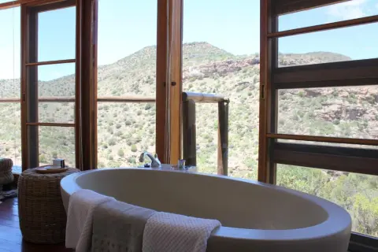
We’ll be straight with you: your phone won’t be doing much out here. And honestly? That’s kind of the point. There’s no Wi-Fi at Sederkloof Lodge either, and it’s deliberate.
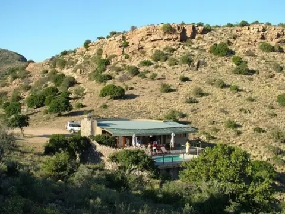
Whether it’s blooming fynbos or roaring waterfalls, every season in the Baviaanskloof brings its own kind of wonder, and Sederkloof Lodge is ready for it all.
Experience Sederkloof in pictures.
Discover the untouched landscapes of Baviaanskloof on our scenic hiking trails, designed to suit both casual walkers and seasoned hikers. These trails take you through spectacular mountain ranges, deep gorges, and rugged terrain, offering breathtaking panoramic views at every turn.
Along the way, you’ll encounter pristine rock formations, lush vegetation, and seasonal waterfalls, making each step an unforgettable experience. Whether you prefer a short, leisurely walk or a more challenging uphill trek, our trails provide the perfect opportunity to immerse yourself in nature.
Tap a map to enlarge it.
A short drive from the lodge, the Sewefontein Fountains are a hidden gem within the Baviaanskloof. This unique area is home to a series of crystal-clear freshwater springs, naturally bubbling from the earth and forming small pools surrounded by lush, green vegetation.
Guests can stroll along shaded pathways, enjoy the peaceful ambiance, and take in the beauty of this untouched natural wonder. The Sewefontein area also has a fascinating ecological significance, with a variety of plant life thriving in the rich, water-fed environment.
For those seeking a full day of adventure, our Baviaanskloof Full-Day Excursion offers an incredible journey through some of the most scenic and remote areas of the region. This experience includes visits to historical sites, dramatic mountain passes, and breathtaking viewpoints, providing an in-depth look at the unique landscape.
Along the way, guests can enjoy picnic stops, explore hidden caves, and take in the vast wilderness that makes Baviaanskloof so extraordinary. A truly immersive way to experience the rugged beauty of this UNESCO World Heritage Site.
Far from city lights, Sederkloof Lodge offers one of the best stargazing experiences in South Africa. On clear nights, the sky comes alive with millions of stars, constellations, and the breathtaking Milky Way stretching across the horizon.
Guests can relax on their private decks or gather in open viewing areas, enjoying the crisp night air while admiring the celestial wonders above. With no light pollution, this experience allows for crystal-clear views of planets, shooting stars, and deep-space wonders, making it a must-do activity for anyone seeking a connection to the cosmos.
The Baviaanskloof Wilderness Area is home to an incredible variety of mammals, offering guests the chance to witness South Africa’s natural heritage up close. From majestic antelope species to smaller, elusive creatures, the region boasts a diverse range of wildlife that thrives in this untouched ecosystem.
While some species are seen frequently, others remain hidden in the rugged terrain, adding an element of mystery to the experience. Whether exploring on foot or relaxing on the lodge’s deck, the wilderness comes to life with fascinating wildlife activity.
With over 310 recorded bird species, the Baviaanskloof is a dream destination for bird enthusiasts. The region’s diverse ecosystems support a wide range of birdlife, from colorful sunbirds and vibrant kingfishers to majestic raptors like the African fish eagle and black eagle.
Whether wandering through riverine forests, open grasslands, or rugged mountain cliffs, guests can expect to see an array of feathered wonders. Guided birdwatching experiences allow visitors to learn about the area’s endemic species, while casual observers can enjoy the delightful sights and sounds of birds from the comfort of their chalet’s private deck. Don’t forget your binoculars: this is a birding experience not to be missed!
For those fascinated by South Africa’s reptilian inhabitants, Sederkloof Lodge provides an opportunity to observe some of the region’s 56 reptile species. The rocky terrain and warm climate make Baviaanskloof an ideal habitat for geckos, lizards, and skinks, while more secretive creatures, such as tortoises and chameleons, can be spotted in the thick vegetation.
The area is also home to several snake species, including the Cape cobra and puff adder, though these are typically shy and rarely encountered. For reptile enthusiasts, the diverse lizard populations, such as the striking blue-spotted girdled lizard, are a fascinating sight among the sun-drenched rocks.
Amphibians are an essential part of the Baviaanskloof ecosystem, playing a crucial role in maintaining the region’s biodiversity. With 17 recorded species, including frogs, toads, and ghost frogs, these creatures thrive in the area’s freshwater sources and seasonal streams. Their calls create a soothing nighttime symphony, adding an enchanting soundtrack to the lodge’s natural setting.
Among the notable species found here are the Cape river frog, painted reed frog, and bushveld rain frog, each contributing to the delicate balance of this unique wilderness. Whether after a summer rain or near a hidden forest pool, guests may be lucky enough to witness these small yet remarkable creatures in their natural habitat.
As part of the Cape Floristic Region, the fynbos biome at Sederkloof Lodge is one of the most biodiverse plant ecosystems in the world. Found at higher elevations and mountain slopes, this unique habitat is home to an array of delicate proteas, ericas, and restios, many of which are endemic to South Africa.
The fynbos thrives in nutrient-poor soils and relies on fire cycles to regenerate, making it a fascinating and ever-evolving ecosystem. Its vibrant colours, unique fragrances, and striking landscapes make for an unforgettable experience, particularly during the flowering season when the hills burst into a tapestry of reds, yellows, and purples.
At lower elevations, the grassland and savannah biomes dominate the valley floor, offering a contrasting landscape of golden grasses, scattered Acacia trees, and seasonal wildflowers. This biome supports a wide variety of plant species adapted to withstand seasonal changes and provides essential grazing areas for herbivores.
Among the notable vegetation found here are Camel Thorn (Acacia karoo), wildflowers, and robust shrub species, creating an ever-changing landscape throughout the year. Whether swaying in the summer breeze or tinged with warm autumn hues, these open plains provide a stunning backdrop for exploration.
The subtropical thicket biome is a lush, water-rich environment characterised by dense clusters of vegetation, hardy shrubs, and broad-leafed trees. This biome flourishes on north and east-facing slopes, where Spekboom (Portulacaria afra) forms dense green patches, playing a crucial role in preventing soil erosion and carbon absorption.
The rich plant diversity of this biome attracts a variety of birds and insects, making it a wonderful area to explore for those interested in botanical wonders and conservation efforts. Its cool, shaded pathways provide a stark contrast to the arid surroundings, offering a refreshing escape into nature.
Defined by rugged landscapes, rocky outcrops, and water-storing plants, the Nama Karoo and Succulent Karoo biomes are home to some of South Africa’s most resilient plant species. These semi-arid biomes boast a remarkable collection of aloes, crassulas, mesembs, and euphorbias, which have adapted to survive long dry periods by storing moisture in their thick, waxy leaves.
During seasonal rainfall, the landscape transforms into a spectacular floral display, with brightly coloured succulents and flowering desert plants creating a breathtaking contrast against the dry terrain. This biome is also a treasure trove for plant enthusiasts, offering unique medicinal and traditional plants used for centuries.
Tucked deep within cool, misty gorges, the forest biome offers a tranquil and shaded escape filled with towering trees, ferns, and lush undergrowth. This ecosystem thrives in moist, sheltered areas, where wild fig trees, stinkwoods, and cycads create a dense and thriving habitat.
The canopy provides shelter for a variety of bird species, while the cool, damp air carries the scent of earthy moss and fragrant foliage. Walking through these hidden forest pockets, guests can discover the region’s medicinal plants, ancient trees, and rare plant species, making it a must-visit for nature lovers and photographers alike.
Below is a list of common medical terms related to medicinal plants and traditional healing practices. These terms help explain how various natural remedies have been used for centuries to promote health and well-being.
Aalwyn · Asphodelaceae family
Aloe ferox, the largest and most visible aloe in the area, is used extensively for medicinal purposes. The leaves or roots are used as a laxative and in the treatment of arthritis, eczema and stress. The sap from the leaves is used to treat acne, burning wounds and skin irritations. The trade (international and local) of Aloe ferox leaf sap and products is sustaining a large number of people.
Aloe tappers traditionally gather the juice of Aloe ferox to sell on the pharmaceutical market. It is a family trade that gets passed down from one generation to the next in the Western and Eastern Cape. Tappers from the Uniondale district travel to farms in the Baviaanskloof area annually to tap aloes, and live nomadically between farms whilst doing so. They cut the elongated triangular leaves from aloes and place them on top of each other in a circle to form a catchment area in the middle where the sap is subsequently collected.
Gifbol, bushman poison bulb · Amaryllidaceae family
The dry outer scales of the bulb are used as an outer dressing after circumcision and are also applied to boils or septic wounds (often mixed with water, milk or oil) to alleviate pain and to “draw out” the pus. Very weak decoctions of the bulb scales are used as an effective sedative.
Higher doses induce visual hallucinations, which are sometimes used for divination and even higher doses can be fatal.
Suurvygie, sour fig · Mesembryanthemaceae family
This species grows on the ground. It is a succulent, and flowers are large pink and yellow, depending on the species. The fruits of Carpobrotus species are edible, and can be eaten either fresh or in dried form. A very popular preserve is made from the fruits, and is highly sought after as an ingredient in Eastern cooking.
Sap from the leaves is used to treat insect bites on the skin, as well as minor skin ailments such as pimples or rash. Leaf juice is gargled to treat infections of the mouth and throat. It is also taken orally for dysentery, digestive troubles, tuberculosis and as a diuretic and styptic. It is applied externally to treat eczema, wounds and burns. It is also said to be highly effective against toothache, earache and oral and vaginal thrush.
Plakkie, pig’s ear · Crassulaceae family
The fleshy part of the leaf is applied to corns and warts to soften and remove them. A single leaf is eaten as a vermifuge. The warmed leaf sap is used as drops for earache and toothache. The juice has been used to treat epilepsy.
Sandolien, sand olive · Sapindaceae family
The sand olive is a shrub or small tree that grows in the fynbos biome on top of the mountains, but also occurs interspersed in valley bushveld vegetation, as well as in riparian habitats close to water. Its leaves are narrow and elliptic with a shiny light-green colour. It has inconspicuous yellow-green flowers, and the fruit are winged to facilitate wind dispersal.
This plant is used to consolidate sand in many countries. Early records claim that sand olive effectively treats tuberculosis, skin rashes and fever. A decoction of the leaves is an early Cape remedy for fever, and is still widely used to treat colds, influenza, stomach troubles, rheumatism and as a gargle for sore throats and oral thrush.
Wildevy, wild fig · Moraceae family
The wild fig is certainly one of the most magnificent tree species to be appreciated in the Baviaanskloof, with its root system growing above the ground in spiralling masses, and its trunks growing high up into a forest canopy that lures monkeys and birds to its sweet fruits. Its way of life is to sink its roots into a shallow water source, and it therefore occupies spaces next to rivers, dams and fountains.
The leaves are elliptic to ovate with irregularly toothed margins. A distinguishable feature of this tree is the figs that grow in leafless clusters of branchlets growing from the trunk, the main branches, and occasionally from the roots.
The wood is used for furniture, drums and, in the past, for the brake blocks of ox-wagons. Although usually infected by insects, the fruit is tasty and is eaten fresh or sun-dried. The figs are a favourite meal of birds, bats, monkeys and ants. An infusion of the root is used to treat infertility in both sexes. The powdered root is taken orally to treat nose bleeds. The latex is dripped directly onto the eye to treat cataracts.
Kruisbessie · Tiliaceae family
This is a very beautiful shrub that grows up to three meters high. Its leaves are alternately arranged, with the underside covered in minute hairs. It carries attractive pink flowers, and the fruit are small and green, and arranged in a characteristic cross shape.
Many Grewia species are found throughout the Karoo and the Kalahari. Bushmen used these shrubs to manufacture bow arrows from the stems, and rope from the fibrous bark. The fruit is edible and has been used as a basis for brewing beer.
Wilde dagga · Lamiaceae family
This herb grows as a multi-stemmed shrub, up to 1.50 m. It sometimes occurs on mountain slopes, but prefers the moist conditions found close to mountain streams inside a gorge. Leaf infusions are taken for colds, flu, bronchitis, asthma and headaches.
Leonotis leonurus contains the same diterpenoid lactones that are also found in the European white horehound (Marrubium vulgare), which is traditionally used as a coughing medicine. Leaves are smoked to treat epilepsy. Leaves and roots are widely used as a remedy for snake bite and other bites and stings.
Externally, decoctions have been applied to treat boils, eczema, skin diseases, itching and muscular cramps.
Internally, decoctions are used for coughs, colds, influenza, bronchitis, high blood pressure and headaches. Leaf infusions have been used for asthma and viral hepatitis.
Doppruim, jacket plum · Sapindaceae family
This tree is characteristic of the mountain slopes at Sederkloof Lodge. It is a small to medium-sized tree, often with an umbrella shape resulting from the removal of its lower branches by browsers. The leaves are simple, oblong and alternately arranged. Its flowers are arranged in spike-like heads, scented and yellowish-green. The male and female flowers occur on separate trees.
The fruit is a green capsule, later splitting open to reveal orange-red flesh. The fruit is used to make jelly and jam. The edible oil has been used to oil rifles and to make soap.
The jacket plum provides good fodder for livestock and game. Most frugivorous birds visit this tree. Larvae of pearl-spotted charaxes butterfly and brown playboy butterfly live on the tree and serve as pollinators.
Malva · Geraniaceae family
At least four species of Pelargonium occur at Sederkloof Lodge. They have stunning pink, cream or white flowers, and usually grow in riparian vegetation close to mountain streams. A few species grow on top of the mountains in Fynbos vegetation.
Pelargoniums are internationally acclaimed garden plants, and some South African species are water-wise plants, meaning they are good to plant because they can grow with only a little water. Many garden hybrids have been developed from this Southern African group, especially in Europe.
The tubers of Pelargoniums are used medicinally. P. reniforme and P. sidoides (both not found in Baviaanskloof) are ingredients of a German medicine called ‘Umckaloabo’, which is used to treat bronchitis in children.
Infusions of the tubers are used to treat diarrhoea and dysentery.
Hard fern · Adiantaceae family
The leaves can be smoked for head colds, chest colds and asthma.
Decoctions of the rhizomes are used to treat boils and abscesses, and for intestinal parasites. Other species such as Cheilanthes sp. can be smoked to relieve head and chest colds. This fern likes to grow in between rock crevices on rough mountain slopes, but also in wet conditions in a ravine.
Planning a stay at Sederkloof Lodge? You’re in for wide skies, mountain pools, and the sweet sound of nothing. But before you hit the road, here’s what you actually need to pack. First off, stick to lightweight layers: mornings can be crisp and afternoons warm. Bring good hiking shoes or takkies for kloof walks, and don’t forget swimwear for those refreshing dips in the rock pools. A wide-brimmed hat and strong sunscreen are non-negotiables, especially since there’s limited shade out here. Binoculars will level up your wildlife spotting, and a reusable water bottle will keep you hydrated while you explore.
On the flip side, don’t overpack. And unless you’re planning to do serious work (spoiler: you won’t), ditch the excess tech. The less you bring, the more space you’ll have for the scenery, the silence, and the experience.
Getting to Sederkloof isn’t just about reaching your destination, it’s about sinking into the landscapes along the way. Whether you’re coming from Port Elizabeth (around 3.5 hours) or George (about 3 hours), the drive offers winding gravel roads, changing scenery, and the kind of views that make you pull over just to take it in.
Most of the year, a 2WD vehicle is totally fine, but after heavy rains, the gravel can get slippery. Always check ahead. Be sure to fill up your tank at Willowmore or Patensie, as there are no petrol stations beyond that. While you’re on the road, take time to stop at the entrance of the Baviaanskloof mega-reserve, enjoy the stunning views at Bergplaas lookout, and grab some padkos at a Karoo farm stall. Download your route for offline use, pack snacks, and allow extra time. The road to Sederkloof is part of the magic.
See the mapWe’ll be straight with you: your phone won’t be doing much out here. And honestly? That’s kind of the point. The Baviaanskloof is remote, rugged, and gloriously free of cell towers. You won’t get pings, you won’t get emails, and you won’t be expected to answer anything, except perhaps, “Another glass of wine?”
There’s no Wi-Fi at Sederkloof Lodge either, and it’s deliberate. This is a space for silence, starry nights, long walks, and actual conversations. The lodge staff have everything needed in case of emergencies, so you’re never unsafe, just unplugged. Embrace it. Leave the buzzing world behind and rediscover how quiet can feel like connection.
Whether it’s blooming fynbos or roaring waterfalls, every season in the Baviaanskloof brings its own kind of wonder, and Sederkloof Lodge is ready for it all.
Summer (December to February) brings hot, sunny days with warm nights and the occasional dramatic thunderstorm. It’s perfect for swimming and lazy hammock afternoons.
Autumn (March to May) has cooler air, golden light, and long, comfortable hiking weather.
Winter (June to August) means chilly nights, perfect for fireside chats and unbelievable stargazing. Bring a jacket and something good to read.
Spring (September to November) is a riot of wildflowers, fresh water flowing through the kloofs, and animals with little ones in tow.
There’s no “bad” time to visit, just different flavours of wild, quiet beauty.